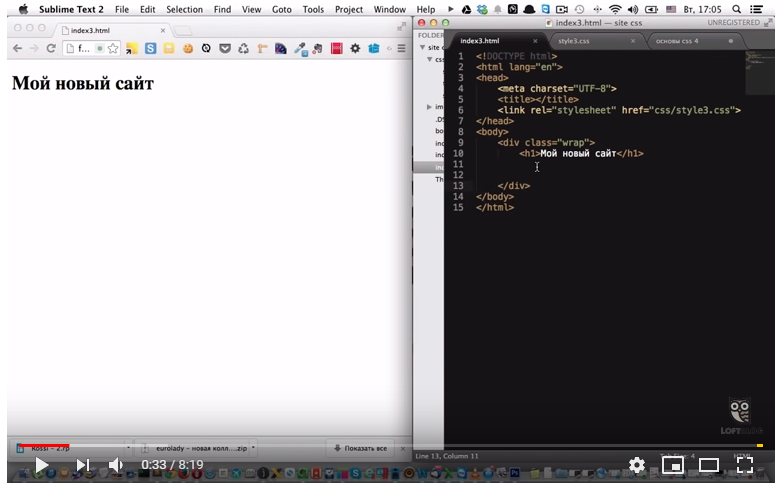

|

|
CSS#3 - Box model, margin.
|
В этом видео мы приступим к практике. Начнем познавать азы верстки.
Рассмотрены box model блочных элементов,поймем для чего нужны div и научимся их использовать, а так же рассмотрим на практике свойство margin и
горизонтальное позиционирование.
|